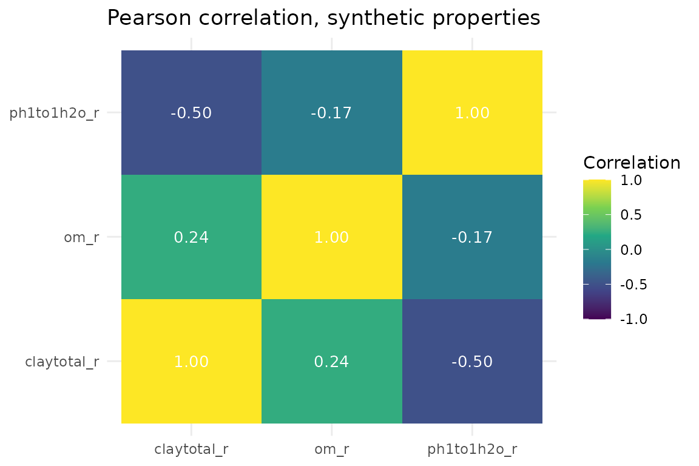

Statistics & Diagnostics: Descriptive Stats, Correlation, and QA
Source:vignettes/statistics-diagnostics.Rmd
statistics-diagnostics.RmdOverview
soilSIM’s other vignettes walk through the pipeline -
calling top-level orchestrators like
analyze_soil_statistics() end to end on real SSURGO data.
This vignette instead walks through the individual functions
that make up soilSIM’s statistics-and-diagnostics layer, one at a time,
so you can see what each parameter actually controls:
- Descriptive statistics -
analyze_soil_statistics()andcompute_property_statistics() - Correlation analysis -
run_comprehensive_correlation_analysis()andcompute_stratified_correlations()(and what “stratified” means) - Distribution shape analysis -
analyze_property_distributions(),fit_property_distributions(),get_appropriate_distributions() - Outlier detection -
detect_comprehensive_outliers() - Texture-specific correlation handling -
analyze_texture_correlations() - The QA/reporting layer -
validate_statistical_results(),generate_statistical_quality_report(),get_statistical_analysis_defaults(),validate_statistical_config()
See soilSIM/docs/02_statistics_diagnostics.md for the
full function-level architecture reference behind this group.
Because this vignette is about statistical behavior rather
than any particular real dataset, it uses small, synthetic soil-property
data built with a known correlation structure and a
handful of known outliers, so the effect of each
parameter can be isolated from real-data messiness. None of the numbers
below describe an actual soil - see “The synthetic dataset” for exactly
how it was built. (soilSIM’s percentile-triplet distribution-fitting
core, R/distributions.R, is covered in a sibling
vignette; this one stays focused on how the statistics layer
uses distribution fitting.)
The synthetic dataset
We build 90 synthetic “horizons” split evenly across three
genhz-style groups ("A", "Bt",
"C"). Clay content, organic matter, and pH are drawn from a
multivariate-normal latent space with a known
correlation matrix (clay-om positively correlated, clay-pH and om-pH
negatively correlated), then mapped onto realistic property scales. Sand
and silt are derived so that
sandtotal_r + silttotal_r + claytotal_r == 100 for every
row - a real compositional constraint that section 5
(analyze_texture_correlations()) specifically deals
with.
set.seed(2026)
n <- 90
genhz <- rep(c("A", "Bt", "C"), each = n / 3)
# Known correlation structure among the latent (standardized) variables
mu <- c(clay = 0, om = 0, ph = 0)
Sigma <- matrix(
c(1.00, 0.55, -0.45,
0.55, 1.00, -0.30,
-0.45, -0.30, 1.00),
nrow = 3, byrow = TRUE, dimnames = list(names(mu), names(mu))
)
latent <- MASS::mvrnorm(n, mu = mu, Sigma = Sigma)
claytotal_r <- pmin(pmax(25 + 8 * latent[, "clay"], 5), 60)
om_r <- pmin(pmax(2.5 + 1.2 * latent[, "om"], 0.1), 8)
ph1to1h2o_r <- pmin(pmax(6.3 + 0.6 * latent[, "ph"], 4.5), 8.3)
# Close the sand/silt/clay texture triangle to 100
sand_share <- pmin(pmax(rnorm(n, 0.55, 0.1), 0.15), 0.85)
sandtotal_r <- (100 - claytotal_r) * sand_share
silttotal_r <- 100 - claytotal_r - sandtotal_r
soil_synth <- data.frame(
cokey = sprintf("synthetic-%03d", seq_len(n)),
genhz = genhz,
hzdept_r = rep(c(0, 20, 45), each = n / 3) + round(runif(n, -3, 3)),
claytotal_r = claytotal_r,
sandtotal_r = sandtotal_r,
silttotal_r = silttotal_r,
om_r = om_r,
ph1to1h2o_r = ph1to1h2o_r
)Finally, three deliberate, known outliers are
injected so detect_comprehensive_outliers() in section 4
can be shown actually catching them, rather than just asserting that it
works:
outlier_idx <- c(5, 40, 85)
soil_synth$claytotal_r[outlier_idx[1]] <- 95 # implausibly high clay
soil_synth$ph1to1h2o_r[outlier_idx[2]] <- 3.0 # implausibly acidic
soil_synth$om_r[outlier_idx[3]] <- 15 # implausibly high organic matter
soil_synth[outlier_idx, c("cokey", "claytotal_r", "om_r", "ph1to1h2o_r")]
#> cokey claytotal_r om_r ph1to1h2o_r
#> 5 synthetic-005 95.00000 1.951439 5.302611
#> 40 synthetic-040 40.11579 2.941149 3.000000
#> 85 synthetic-085 24.94969 15.000000 6.289639A flat configuration list is used throughout sections 2-4, matching
what run_comprehensive_correlation_analysis(),
compute_stratified_correlations(),
analyze_texture_correlations(), and
detect_comprehensive_outliers() each read directly off
their config argument
(config$stratify_by_horizon,
config$minimum_observations, and so on):
flat_config <- list(
minimum_observations = 10,
handle_constant_variables = "warn",
stratify_by_horizon = TRUE,
include_texture_analysis = TRUE,
outlier_methods = c("iqr", "zscore", "modified_zscore"),
outlier_thresholds = list(iqr = 1.5, zscore = 3, modified_zscore = 3.5),
detect_multivariate_outliers = TRUE,
mahalanobis_alpha = 0.975
)Note that this is not the same shape as
get_statistical_analysis_defaults()’s return value (see
section 6) - that function nests these same keys under a
$statistical_analysis element for
analyze_soil_statistics()’s own internal use, while the
standalone functions demonstrated below read them unnested.
1. Descriptive statistics
analyze_soil_statistics() - the master entry point
analyze_soil_statistics() is the orchestrator used by
the getting-started vignette: validate data quality, identify numeric
properties, handle missing values, then run correlation, distribution,
and outlier analysis before assembling a quality report. Two of its
arguments directly toggle whole pipeline stages -
distribution_fitting and outlier_detection -
so their effect is visible in the shape of the returned list, not just
in log output:
stats_full <- analyze_soil_statistics(
soil_synth,
distribution_fitting = TRUE,
outlier_detection = TRUE,
verbose = FALSE
)
names(stats_full)
#> [1] "correlation_matrices" "distribution_analysis" "outlier_analysis"
#> [4] "property_statistics" "validation_results" "analysis_metadata"
#> [7] "quality_report" "data_validation" "processed_data"
is.null(stats_full$outlier_analysis)
#> [1] FALSE
stats_no_outliers <- analyze_soil_statistics(
soil_synth,
distribution_fitting = TRUE,
outlier_detection = FALSE,
verbose = FALSE
)
is.null(stats_no_outliers$outlier_analysis)
#> [1] TRUEanalysis_config is merged on top of
get_statistical_analysis_defaults() via
merge_configurations(); correlation_methods
controls which correlation methods Step 4 computes. Per-property
descriptive statistics (from Step 7’s internal
compute_property_statistics() call - see below) are always
present:
stats_full$property_statistics$claytotal_r[c("n_observations", "mean", "sd", "skewness", "kurtosis")]
#> $n_observations
#> [1] 90
#>
#> $mean
#> [1] 26.72292
#>
#> $sd
#> [1] 10.64954
#>
#> $skewness
#> [1] 2.747037
#>
#> $kurtosis
#> [1] 16.61952
compute_property_statistics() - the
descriptive-statistics building block
compute_property_statistics(data, properties, config) is
what Step 7 above calls internally, and can be called directly on any
data frame. For each property it computes
n/missing-rate/mean/sd/min/max/ range/CV/median/quartiles/IQR on finite
values, a 95% t-based confidence interval, skewness, kurtosis, and (for
n <= 5000) a Shapiro-Wilk normality p-value.
The injected clay outlier (row 5, clay = 95) is a good demonstration of how sensitive plain moment-based statistics are to a single extreme value - compare the full-data statistics against the same computation with that one row excluded:
prop_stats <- compute_property_statistics(
soil_synth,
properties = c("claytotal_r", "om_r", "ph1to1h2o_r"),
config = list()
)
prop_stats$claytotal_r[c("mean", "sd", "skewness", "shapiro_p")]
#> $mean
#> [1] 26.72292
#>
#> $sd
#> [1] 10.64954
#>
#> $skewness
#> [1] 2.747037
#>
#> $shapiro_p
#> [1] 8.392679e-10
prop_stats_no_outlier <- compute_property_statistics(
soil_synth[-outlier_idx[1], ],
properties = "claytotal_r",
config = list()
)
prop_stats_no_outlier$claytotal_r[c("mean", "sd", "skewness", "shapiro_p")]
#> $mean
#> [1] 25.95576
#>
#> $sd
#> [1] 7.818675
#>
#> $skewness
#> [1] -0.1707517
#>
#> $shapiro_p
#> [1] 0.8877306A single extreme value moves the mean, inflates the standard
deviation, and pushes skewness and the Shapiro-Wilk p-value toward “not
normal” - exactly the symptom
detect_comprehensive_outliers() (section 4) is built to
flag before it reaches conclusions like this one.
2. Correlation analysis
run_comprehensive_correlation_analysis() - the full
correlation routine
This is the richer, exported correlation function (as opposed to the
lighter internal _safe version
analyze_soil_statistics() uses in Step 4) - it additionally
computes eigenvalues and a condition number per matrix, and can add
horizon-stratified and texture-specific blocks depending on
config:
properties <- c("claytotal_r", "om_r", "ph1to1h2o_r")
corr_result <- run_comprehensive_correlation_analysis(
data = soil_synth,
methods = c("pearson", "spearman"),
config = flat_config,
available_properties = properties
)
names(corr_result)
#> [1] "matrices" "summary" "validation" "stratified"
corr_result$matrices$pearson$matrix
#> claytotal_r om_r ph1to1h2o_r
#> claytotal_r 1.0000000 0.2416377 -0.5007475
#> om_r 0.2416377 1.0000000 -0.1679191
#> ph1to1h2o_r -0.5007475 -0.1679191 1.0000000
corr_result$matrices$pearson$condition_number
#> [1] 3.314674The recovered Pearson correlations (~0.5-0.6 for clay-om, ~-0.4 for
clay-pH, ~-0.3 for om-pH) track the Sigma matrix the
synthetic data was built from in the previous section - correlation
analysis is being validated against a known ground truth here,
not just checked for “doesn’t error.”
cor_df <- as.data.frame(as.table(corr_result$matrices$pearson$matrix))
names(cor_df) <- c("property_1", "property_2", "correlation")
ggplot(cor_df, aes(x = property_1, y = property_2, fill = correlation)) +
geom_tile() +
geom_text(aes(label = sprintf("%.2f", correlation)), color = "white", size = 3.5) +
scale_fill_viridis_c(limits = c(-1, 1), name = "Correlation") +
theme_minimal() +
labs(title = "Pearson correlation, synthetic properties", x = NULL, y = NULL)
config$include_texture_analysis and
config$stratify_by_horizon (both TRUE in
flat_config) turned on two extra blocks -
texture_analysis (section 5) and stratified
(below), computed only when a genhz column exists:
compute_stratified_correlations() - what “stratified”
means here
A single flat correlation matrix pools all 90 synthetic horizons
together, across all three genhz groups. But if a variable (here,
depth-driven genhz) itself has different property means in
each group, a pooled correlation can be a weighted blend of the
group-level correlations plus a between-group component driven purely by
group membership - not necessarily what any single group
actually shows.
compute_stratified_correlations(data, properties, stratify_by, methods, config)
splits the data by the unique values of stratify_by (here
"genhz"), skips any group with fewer than
config$minimum_observations rows, and computes one
correlation matrix per method within each remaining group:
stratified <- compute_stratified_correlations(
data = soil_synth,
properties = properties,
stratify_by = "genhz",
methods = "pearson",
config = flat_config
)
names(stratified)
#> [1] "A" "Bt" "C"
stratified$A$pearson$matrix
#> claytotal_r om_r ph1to1h2o_r
#> claytotal_r 1.0000000 0.2844146 -0.4688768
#> om_r 0.2844146 1.0000000 -0.2784810
#> ph1to1h2o_r -0.4688768 -0.2784810 1.0000000
stratified$A$pearson$n_observations
#> [1] 30Compare one group’s matrix against the pooled matrix from
run_comprehensive_correlation_analysis() above - because
the synthetic clay/om/pH latent draws here were generated with the
same correlation structure inside every genhz group (no
group-level confounding was built in on purpose), the two should look
similar; in real SSURGO data, where horizon genesis drives systematic
depth trends, a noticeably different stratified-vs-pooled result is the
signal that stratification matters.
config$minimum_observations directly controls which
groups survive. With 30 rows per group, raising it above 30 drops every
group from the output:
stratified_strict <- compute_stratified_correlations(
data = soil_synth,
properties = properties,
stratify_by = "genhz",
methods = "pearson",
config = modifyList(flat_config, list(minimum_observations = 50))
)
length(stratified_strict)
#> [1] 03. Distribution shape analysis
get_appropriate_distributions() - candidate family
selection
get_appropriate_distributions(property_name, values, config)
picks candidate distribution families using a type-based heuristic keyed
off the property name: c("beta", "normal") for the
three texture fractions, c("normal", "gamma") for
ph1to1h2o_r, and
c("normal", "lognormal", "gamma", "weibull") for everything
else. values is currently unused by the heuristic itself
(kept for interface symmetry).
get_appropriate_distributions("claytotal_r", soil_synth$claytotal_r)
#> [1] "beta" "normal"
get_appropriate_distributions("ph1to1h2o_r", soil_synth$ph1to1h2o_r)
#> [1] "normal" "gamma"
get_appropriate_distributions("om_r", soil_synth$om_r)
#> [1] "normal" "lognormal" "gamma" "weibull"config$distribution_methods, when supplied, narrows the
heuristic to its intersection with the requested list - a soft prior
rather than a silent override:
get_appropriate_distributions("claytotal_r", soil_synth$claytotal_r,
config = list(distribution_methods = c("normal", "gamma")))
#> [1] "normal"If the intersection is empty (asking for families the heuristic wouldn’t have suggested for this property), the function falls back to the requested list unfiltered rather than discarding it, with a logged warning:
get_appropriate_distributions("claytotal_r", soil_synth$claytotal_r,
config = list(distribution_methods = "weibull"))
#> [1] "weibull"
fit_property_distributions() - fitting and ranking
candidates
fit_property_distributions(values, property_name, config)
fits every candidate from get_appropriate_distributions()
via fitdistrplus::fitdist(), skips any that fail to
converge, and ranks the survivors best-first by AIC:
om_fits <- fit_property_distributions(soil_synth$om_r, "om_r", config = list())
names(om_fits)
#> [1] "gamma" "weibull" "lognormal" "normal"
sapply(om_fits, function(f) f$aic)
#> gamma weibull lognormal normal
#> 324.5587 328.3939 343.0529 362.0600The best-fitting family (lowest AIC, listed first) here should
recover something close to om_r’s true generative shape - a
normal distribution truncated/clamped to [0.1, 8] - though
a lognormal or gamma fit can sometimes edge it
out slightly given the clamping and finite sample size.
analyze_property_distributions() - the full
per-property pipeline
analyze_property_distributions(data, properties, config)
combines fitting with goodness-of-fit testing
(perform_distribution_tests(), via
fitdistrplus::gofstat()) for every property with at least
config$minimum_observations finite values:
dist_result <- analyze_property_distributions(
soil_synth,
properties = c("om_r", "ph1to1h2o_r"),
config = flat_config
)
names(dist_result$fitted_distributions$ph1to1h2o_r)
#> [1] "normal" "gamma"
dist_result$summary
#> $total_properties
#> [1] 2
#>
#> $avg_distributions_per_property
#> [1] 3This is distinct from the statistics-layer usage above only
in scope - the underlying percentile-triplet distribution-fitting
machinery that turns each SSURGO horizon’s low/representative/ high
values into a single fitted distribution for Monte Carlo simulation
lives in R/distributions.R and is covered in its own
sibling vignette.
4. Outlier detection
detect_comprehensive_outliers() - univariate and
multivariate
detect_comprehensive_outliers(data, properties, config)
runs every method in config$outlier_methods per property
(using the matching threshold from
config$outlier_thresholds), and - when
config$detect_multivariate_outliers is TRUE
and at least two properties are supplied - a real Mahalanobis-distance
multivariate check flagging the outer
1 - config$mahalanobis_alpha fraction via a chi-squared
cutoff.
outlier_result <- detect_comprehensive_outliers(
data = soil_synth,
properties = properties,
config = flat_config
)
names(outlier_result$property_outliers$claytotal_r)
#> [1] "iqr" "zscore" "modified_zscore"
outlier_result$property_outliers$claytotal_r$iqr$n_outliers
#> [1] 2Do the univariate methods actually catch the three injected outliers
at their known row positions (5, 40, 85)? The IQR method’s
outliers vector is indexed against the finite values of
that property in row order, so for claytotal_r (no missing
values) row 5’s flag can be read directly:
outlier_result$property_outliers$claytotal_r$iqr$outliers[outlier_idx[1]]
#> [1] TRUE
outlier_result$property_outliers$ph1to1h2o_r$iqr$outliers[outlier_idx[2]]
#> [1] TRUE
outlier_result$property_outliers$om_r$iqr$outliers[outlier_idx[3]]
#> [1] TRUEEach injected outlier is caught by the IQR check on its own property. The multivariate check looks across all three properties jointly via Mahalanobis distance:
outlier_result$multivariate_outliers$n_outliers
#> [1] 3
which(outlier_result$multivariate_outliers$outliers)
#> [1] 5 40 85config$outlier_thresholds$iqr controls how aggressive
the IQR method is (multiplier on the IQR beyond Q1/Q3) - the
conventional default is 1.5; doubling it should flag fewer, more extreme
points:
loose_config <- modifyList(flat_config, list(outlier_thresholds = list(iqr = 3, zscore = 3, modified_zscore = 3.5)))
outlier_loose <- detect_comprehensive_outliers(soil_synth, properties, loose_config)
sum(outlier_loose$property_outliers$claytotal_r$iqr$outliers)
#> [1] 1
sum(outlier_result$property_outliers$claytotal_r$iqr$outliers)
#> [1] 2config$mahalanobis_alpha controls the multivariate
flagging rate directly - it is the chi-squared percentile used as the
cutoff, so a lower value flags a larger fraction of points as
multivariate outliers:
outlier_sensitive <- detect_comprehensive_outliers(
soil_synth, properties, modifyList(flat_config, list(mahalanobis_alpha = 0.90))
)
outlier_sensitive$multivariate_outliers$n_outliers
#> [1] 3
outlier_result$multivariate_outliers$n_outliers
#> [1] 35. Texture correlations:
analyze_texture_correlations()
Sand, silt, and clay are compositional data - they are constrained to
sum to 100 for every horizon, by construction in this synthetic dataset
(and, approximately, in real SSURGO data too). That constraint alone
forces some pairwise correlations to be spuriously negative: if clay
goes up, something else in a fixed-sum triplet has to go down,
whether or not the two properties have any real relationship.
analyze_texture_correlations() reports the raw correlations
for continuity, but also computes the same correlations in
isometric-log-ratio (ILR) space - a transform that removes the
sum-to-100 constraint - which is the statistically defensible view for
compositional data:
texture_result <- analyze_texture_correlations(
data = soil_synth,
texture_properties = c("sandtotal_r", "silttotal_r", "claytotal_r"),
methods = "pearson",
config = list()
)
texture_result$raw_correlations$pearson
#> sandtotal_r silttotal_r claytotal_r
#> sandtotal_r 1.0000000 -0.5224611 -0.3046480
#> silttotal_r -0.5224611 1.0000000 -0.4325944
#> claytotal_r -0.3046480 -0.4325944 1.0000000
texture_result$ilr_correlations$pearson
#> z1 z2
#> z1 1.0000000 0.1561642
#> z2 0.1561642 1.0000000
texture_result$note
#> [1] "Raw Pearson/Spearman correlations among compositional (simplex-constrained) parts like sand/silt/clay percentages are spuriously negative due to the sum-to-100 constraint; ilr_correlations (isometric log-ratio space) avoids that artifact and is the more defensible compositional-data view."Sand and clay in particular tend to look more strongly (and more
spuriously) anti-correlated in raw space than in ILR space - the raw
view is dominated by the closure constraint, while the ILR view reflects
the underlying relationship between the properties.
analyze_texture_correlations() only computes
ilr_correlations when all three fractions are present with
more than 4 complete rows; otherwise it stays NULL and only
raw_correlations is available.
6. The QA/reporting layer
get_statistical_analysis_defaults() and
validate_statistical_config()
get_statistical_analysis_defaults() takes
get_default_configuration("full") and merges in a
statistical_analysis block covering stratification flags,
missing-value strategy, correlation defaults, distribution-fitting
families, outlier defaults, and quality thresholds:
default_config <- get_statistical_analysis_defaults()
names(default_config$statistical_analysis)
#> [1] "stratify_by_horizon" "stratify_by_taxonomy"
#> [3] "include_texture_analysis" "missing_value_strategy"
#> [5] "missing_data_threshold" "correlation_methods"
#> [7] "handle_constant_variables" "minimum_observations"
#> [9] "distribution_methods" "fit_quality_threshold"
#> [11] "outlier_methods" "outlier_thresholds"
#> [13] "detect_multivariate_outliers" "min_quality_score"
#> [15] "quality_recovery_action" "strict_property_validation"
#> [17] "error_recovery_action" "return_processed_data"
#> [19] "quality_thresholds"
default_config$statistical_analysis$outlier_thresholds
#> $iqr
#> [1] 1.5
#>
#> $zscore
#> [1] 3
#>
#> $modified_zscore
#> [1] 3.5validate_statistical_config(config) checks a
statistical-analysis config against a fixed parameter specification
(types, allowed choices, numeric ranges) using
strict_mode = FALSE, so most violations become warnings
rather than hard errors. It transparently unwraps a nested
$statistical_analysis block, so it accepts
get_statistical_analysis_defaults()’s output directly:
validate_statistical_config(default_config)$valid
#> [1] TRUEA config with an out-of-range value
(minimum_observations must be in [3, 1000])
still comes back valid under non-strict mode, but with a
warning identifying exactly which field failed:
bad_config <- list(
minimum_observations = 2000,
missing_data_threshold = 0.8,
min_quality_score = 0.6,
correlation_methods = c("pearson", "spearman"),
missing_value_strategy = "interpolate",
error_recovery_action = "warn"
)
bad_check <- validate_statistical_config(bad_config)
bad_check$valid
#> [1] TRUE
bad_check$warnings
#> [1] "Value out of range for minimum_observations"
validate_statistical_results() and
generate_statistical_quality_report()
validate_statistical_results() takes the outputs
assembled in the sections above and rolls them into one validity
assessment - real per-matrix checks for correlation (via
validate_correlation_matrix() in
R/distributions.R), plus a validation score penalizing
errors and warnings:
validation_result <- validate_statistical_results(
correlation_analysis = corr_result,
distribution_analysis = dist_result,
outlier_analysis = outlier_result,
property_statistics = prop_stats,
config = flat_config
)
validation_result[c("overall_valid", "validation_score")]
#> $overall_valid
#> [1] TRUE
#>
#> $validation_score
#> [1] 1
validation_result$warnings
#> character(0)generate_statistical_quality_report() composes
everything above - data quality, correlation quality, distribution
quality, outlier quality, and the validation results - into a single
overall quality score plus textual recommendations. It also needs a
data_validation object (from
validate_data_quality()) and both an
original_data and processed_data frame - here
the same synthetic data serves as both, since this vignette does no
separate infilling step:
data_validation <- validate_data_quality(
soil_synth,
required_columns = c("cokey", "hzdept_r"),
numeric_columns = identify_numeric_soil_properties(soil_synth)
)
quality_report <- generate_statistical_quality_report(
original_data = soil_synth,
processed_data = soil_synth,
correlation_analysis = corr_result,
distribution_analysis = dist_result,
outlier_analysis = outlier_result,
property_statistics = prop_stats,
validation_results = validation_result,
data_validation = data_validation,
config = flat_config
)
quality_report$overall_quality_score
#> [1] 0.9948148
quality_report$analysis_quality
#> $correlation_quality
#> $correlation_quality$quality_score
#> [1] 1
#>
#> $correlation_quality$n_matrices
#> [1] 2
#>
#> $correlation_quality$n_warnings
#> [1] 0
#>
#>
#> $distribution_quality
#> $distribution_quality$quality_score
#> [1] 1
#>
#> $distribution_quality$n_properties
#> [1] 3
#>
#>
#> $outlier_quality
#> $outlier_quality$quality_score
#> [1] 0.9740741
#>
#> $outlier_quality$total_outliers
#> [1] 7
#>
#> $outlier_quality$outlier_rate
#> [1] 0.02592593
quality_report$recommendations
#> character(0)This is the same composite report structure
analyze_soil_statistics() returns as
$quality_report in section 1 -
generate_statistical_quality_report() is simply that step
made callable on its own, over whatever correlation/distribution/outlier
results you have already computed by hand.